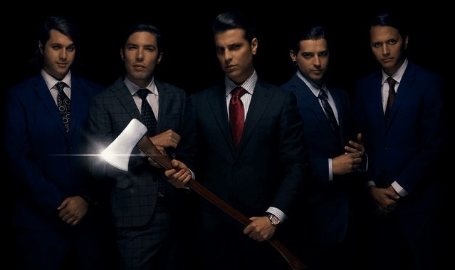
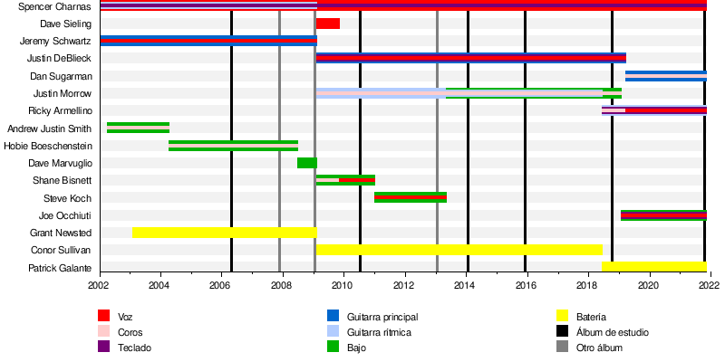

Miembros Actuales
- Spencer Charnas - Voz principal, teclado, guitarra adicional.
- Ricky Amellino - Voz principal de apoyo, guitarra rítmica, teclado.
- Patrick Galante - Batería.
- Joe Occhiuti - Voz principal de apoyo, bajo, teclado.
- Dan Sugarman - Guitarra principal, coros.
Miembros Antiguos
- Andrew Justin Smith - Bajo, coros (2002-2007)
- Jeremy Schwartz - Voz principal de apoyo, guitarra principal (2002-2009)
- Grant Newsted - Batería (2006-2008)
- Hobie Boeschenstein - Bajo, coros (2007-2008)
- Dave Marvuglio - Bajo (2008-2009)
- Dave Sieling - Voz principal de apoyo (2009)
- Shane Bisnett - Bajo, voz limpia (2009-2011)
- Conor Sullivan - Batería (2009-2018)
- Justin DeBlieck - Voz principal de apoyo, guitarra principal, teclado (2009-2019)
- Justin Morrow - Bajo, guitarra rítmica, coros (2009-2019)
- Steve Koch - Bajo, voz limpia (2011-2013)
